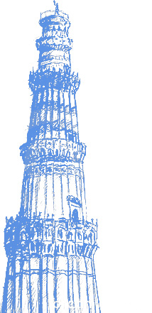

 Qutb Minar is the 2nd tallest minar (73 metres) in India after Fateh
Burj in Chappar Chiri at Mehrauli which stands 100 meters tall. Qutb Minar is
a UNESCO World Heritage Site.The stairs of the tower has 379 steps, is 72.5
metres (237.8 ft) high, and has a base diameter of 14.3 metres, which narrows
to 2.7 metres at the top. Construction was started in 1193 by Qutb-ud-din
Aibak and was carried on by his successor, Iltutmish. In 1368, Firoz Shah
Tughlaq constructed the fifth and the last storey. It is surrounded by several
other ancient and medieval structures and ruins, collectively known as
the Qutb complex.